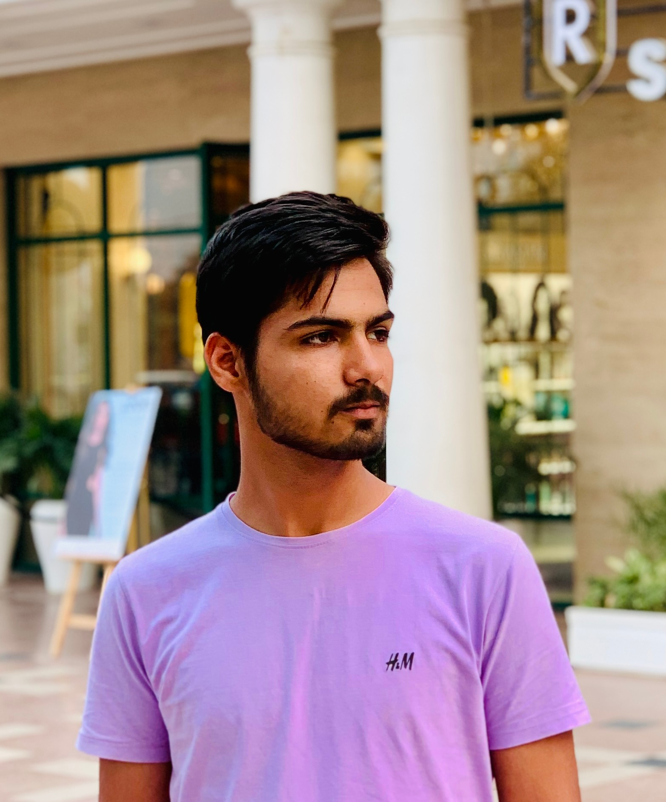

About Me !
Embarking on a journey of data-driven innovation, I'm a seasoned IT professional specializing in HTML, CSS, JavaScript, C, C++, and Oracle Database administration. With a keen eye for efficient solutions, i excels in crafting strategic business solutions and ensuring optimal performance and data integrity. My proficiency extends to Ubuntu environments, where i showcases my troubleshooting and problem-solving prowess. Dedicated to achieving impactful outcomes, I leverages my robust technical background to drive excellence in collaborative team environments.
Age: 20
Residence: Gohana, Haryana
Email:mor.sahil05.28@gmail.com
Phone: +91 9306111259
What I Do
🚀 Crafting Efficient Solutions: My passion lies in creating dynamic and user-friendly web experiences using HTML, CSS, and JavaScript. With a keen eye for design and functionality, I ensure that every website I build not only looks great but also performs optimally across different devices and browsers.
🛠️ Oracle Database Administration: As a meticulous organizer and optimizer of data, I specialize in Oracle Database administration. From schema design to query optimization, I ensure that databases are finely tuned to meet the performance and scalability needs of modern businesses.
🔍 Troubleshooting & Problem-Solving: I thrive in tackling technical challenges head-on, leveraging my strong analytical skills to diagnose and resolve issues efficiently. Whether it's resolving compatibility issues in code or troubleshooting system errors, I approach each problem with tenacity and precision.
💡 Innovative Project Development: Innovation is at the heart of everything I do. I enjoy taking on new challenges and turning ideas into reality through creative project development. From building interactive web applications to designing intuitive user interfaces, I'm constantly pushing the boundaries of what's possible with technology.
🔧 Continuous Learning & Skill Enhancement: In today's fast-paced tech industry, staying ahead of the curve is essential. That's why I'm committed to continuous learning and skill enhancement. Whether it's mastering new programming languages, exploring emerging technologies, or honing my problem-solving abilities, I'm always eager to expand my knowledge and expertise.
🌟 Collaborative Team Player: I thrive in collaborative environments where I can contribute my skills and expertise to achieve shared goals. Whether it's collaborating with developers, designers, or stakeholders, I excel at communication, teamwork, and fostering a positive and productive work culture.